- Afisati primele 10 numere naturale in ordine inversa ( de la 9 la 0)
- Afisati primele 90 numere naturale sub forma unui tabel cu 9 coloane. Alinierea numerelor se va face la stanga.
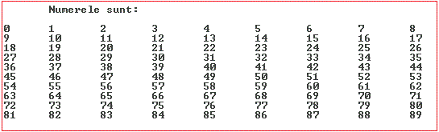
- Afisati primele 200 numere naturale sub forma unui tabel cu 10 coloane. Alinierea numerelor se va face la dreapta.
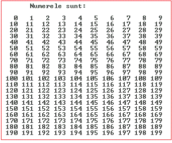
- Afisati primele numere naturale sub forma unui tabel cu 7 coloane si 20 de randuri. Alinierea numerelor se va face la stanga.
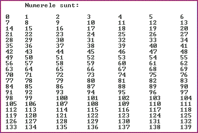
- Afisati primele numere naturale sub forma unui tabel cu 7 coloane si 20 de randuri. Alinierea numerelor se va face la dreapta.
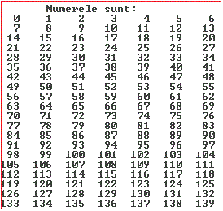
- Afisati suma si produsul primelor 100 numere naturale
- Afisati primele 91 numere naturale astfel: pe prima linie un numar, pe linia a doua 2 nummere, pe linia a treia 3 numere... etc
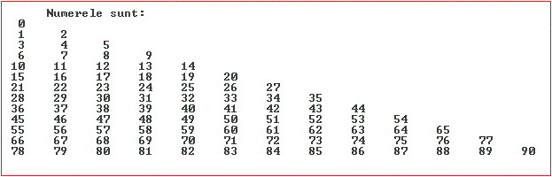
- Afisati primele 91 numere naturale astfel: pe prima linie 13 numar, pe linia a doua 12 nummere, pe linia a treia 11 numere... pe ultima linie un numar
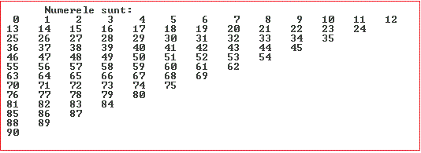
Utilizand instructiunea while realizati urmatoarele aplicatii
- Realizati o aplicatie grafica care deseneaza linii orizontale intr-un dreptunghi asemanator cu imaginea de jos:
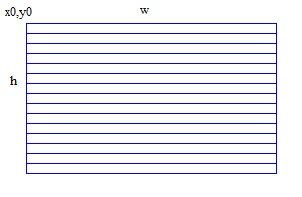
Se dau coordonatele x0, y0, latimea w si inaltimea h ale dreptunghiului. - Realizati o aplicatie grafica care deseneaza linii verticale intr-un dreptunghi asemanator cu imaginea de jos:
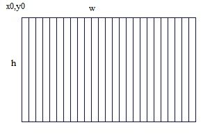
Se dau coordonatele x0, y0, latimea w si inaltimea h ale dreptunghiului. - Realizati o aplicatie grafica care deseneaza caroiaj intr-un dreptunghi asemanator cu imaginea de jos:
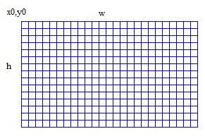
Se dau coordonatele x0, y0, latimea w si inaltimea h ale dreptunghiului. - Realizati o aplicatie grafica pentru a desena axa ox oy cu diviziuni asemanatoare imaginii de jos:
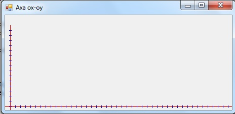
- Realizati o aplicatie grafica pentru a desena dereptunghiuri asemanatoare cu cele de jos:
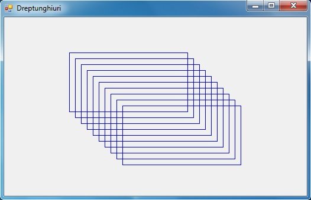
- Realizati o aplicatie grafica pentru a desena elipse si dreptunghiuri de dimensiuni si culori aleatoare asemanatoare cu imaginea de jos:
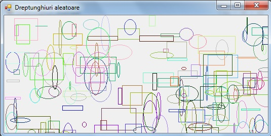
- Reluati aplicatia din curs cu roza polara dar de data aceasta coeficientul se da repetitiv cu o bucla while nu din NumericUpDown
- Realizati un program care calculeaza integrala functiei x3 pe intervalul x1 x2
- Realizati un program care calculeaza integrala functiei x3 pe intervalul 0-10 utilizand metoda trapezului.
- Realizati un program C# WFA care afiseaza graficul din figura de jos:
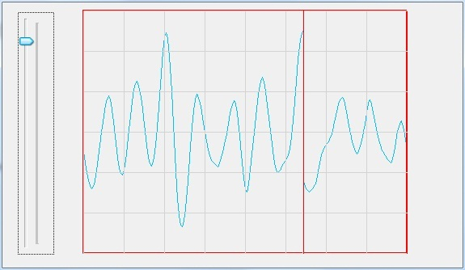
- Realizati o aplicatie grafica in care veti simula un termometru asemanator cu imaginea de jos:
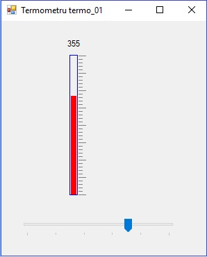
- Afisati primele 25 de numere
- Afisati patratul primelor 10 numere naturale
- Realizati un program care cere un numar si verifica daca acesta este prim sau nu.
- Afisati toate numerele prime pana la 1000
- Afisati exact 73 numere de la 100 la 172 pe 15 linii a cate 5 coloane.
- Realizati un program care afiseaza numerele din figura de jos:
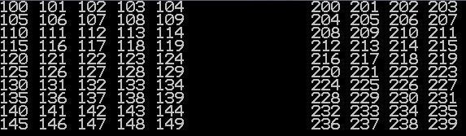
Utilizand instructiunea for realizati urmatoarele aplicatii
- Realizati o aplicatie grafica care deseneaza linii orizontale intr-un dreptunghi asemanator cu imaginea de jos:
Se dau coordonatele x0, y0, latimea w si inaltimea h ale dreptunghiului. - Realizati o aplicatie grafica care deseneaza linii verticale intr-un dreptunghi asemanator cu imaginea de jos:
Se dau coordonatele x0, y0, latimea w si inaltimea h ale dreptunghiului. - Realizati o aplicatie grafica care deseneaza caroiaj intr-un dreptunghi asemanator cu imaginea de jos:
- Avand x0, y0,w,h si numarul de patratele realizati o aplicatie asemanatoare imaginii de jos:
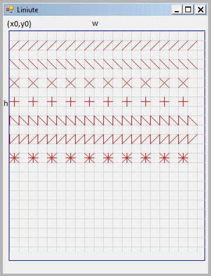
- Realizati o aplicatie grafica pentru a desena axa ox oy cu diviziuni asemanatoare imaginii de jos:
- Realizati o aplicatie grafica pentru a desena 10 dereptunghiuri asemanatoare cu cele de jos:
- Realizati o aplicatie grafica pentru a desena o tabla de sah asemanatoare imaginii de jos:
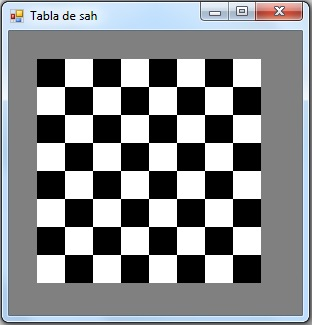
- Realizati o aplicatie grafica in care veti simula un termometru asemanator cu imaginea de jos:
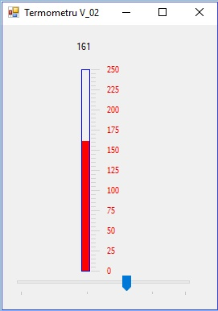
- Realizati o aplicatie grafica reprezentand un instrument virtual de forma:
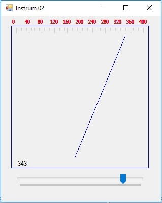
Deplasati acul indicator pe in arc de cerc nu pe o dreapta.
Generati valorile random. - Trasati intr-un cerc o raza intr-o pozitie oarecare
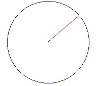
Sugestie: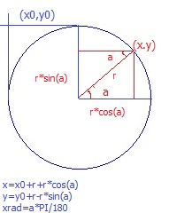
- Trasati 60 raze echidistante intr-un cerc

- Trasati 60 raze echidistante intr-un cerc. Se vor evidentia razele din 5 in cinci cu o culoare distincta astfel:
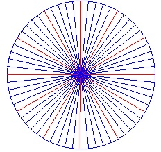
- Realizati un cadran de forma:
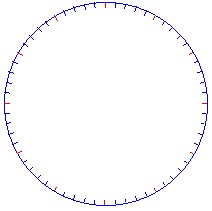
- Folosind un timer afisati cu temporizare de 1 secunda 60 de raze echidistante intru-un cerc
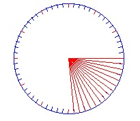
- Reluati aplicatia anterioara dar stergeti razele anterioare pentru a simula o raza care se roteste
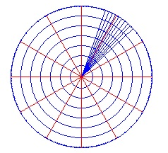
- Simulati radarul din imaginea de sus
- Realizati un ceas de forma:
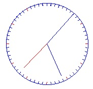
- Afisati rotatia pamantului in jurul soarelui sub forma:
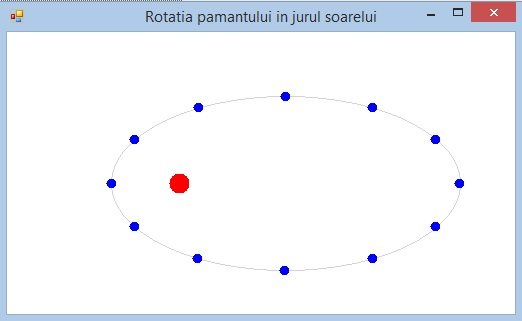
- Folosind un timer cu temporizare de 0,1 simlati rotatia pamantului in jurul soarelui
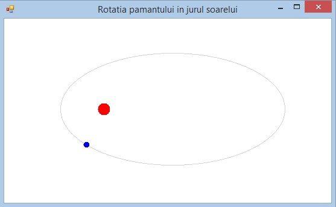
- Realizati o aplicatie grafica pentru a desena elipse si dreptunghiuri de dimensiuni si culori aleatoare asemanatoare cu imaginea de jos:
- Reluati aplicatia din curs cu roza polara dar de data aceasta coeficientul se da repetitiv cu o bucla for nu din NumericUpDown
- Realizati o aplicatie grafica in care veti exemplifica paradoxul lui ahile cu broasca
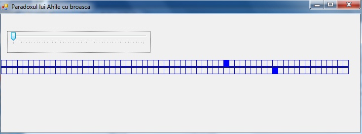
- Realizati o aplicatie grafica in care veti desena n cercuri de forma de jos. N este dat de un trackbar
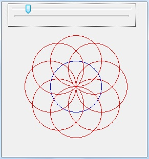